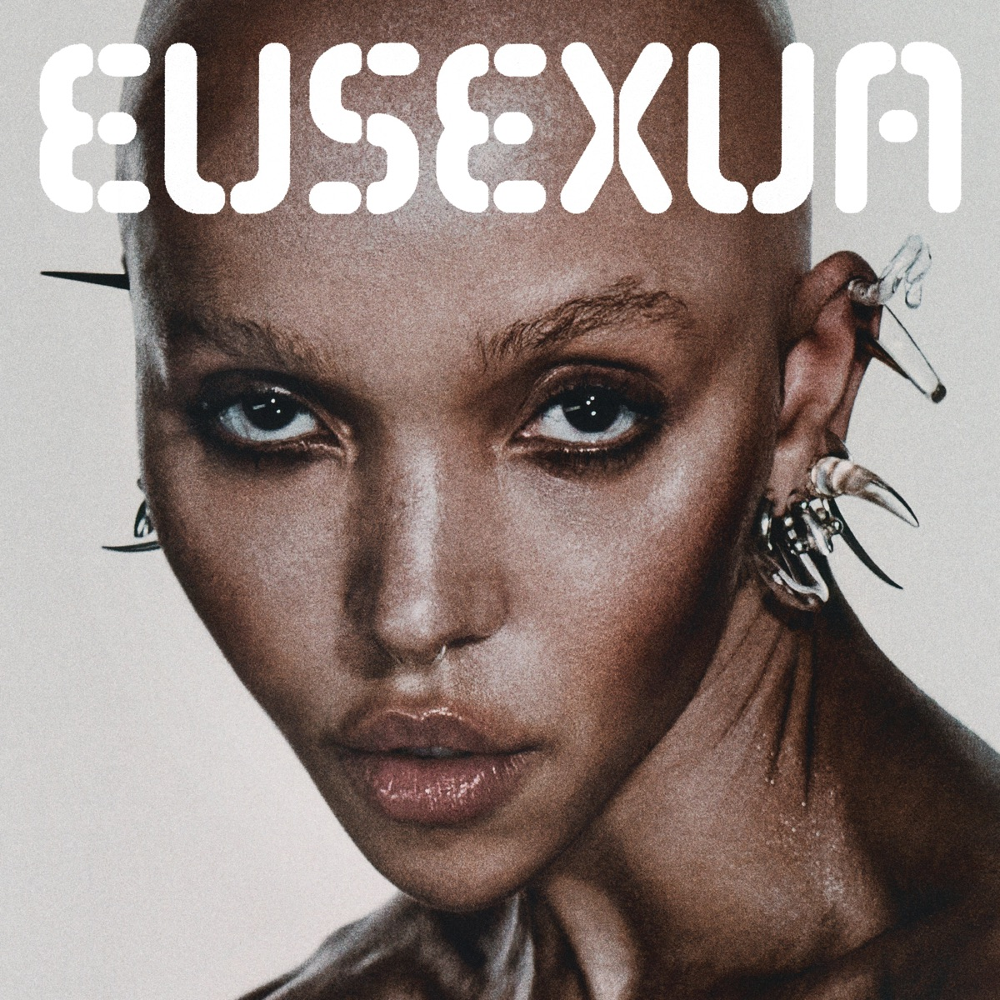

FKA Twigs - Eusexua
La primera muestra de lo que será el tercer trabajo de FKA twigs, seis años después de “Magdalene” (y tres desde la mixtape “Caprisongs”), es la homónima “EUSEXUA”, que abrirá además el álbum.
click en la imágen para comprar
Natalia Lafourcade - De todas las flores
De Todas las Flores es un diario musical inspirado en diferentes experiencias de vida. Es una pieza que honra la vulnerabilidad, la vida y la muerte, la feminidad, la naturaleza, lo místico, el amor y el desamor.
click en la imágen para comprar
Little Simz - Sometimes I Might Be Introvert
Entre los diferentes párrafos de esta carta convertida en disco, nos encontraremos con cinco interludios orquestales, pequeñas gemas que aportan reflexión y personalidad a un álbum que podría ser perfectamente la banda sonora rapeada de una historia completa.
click en la imágen para comprar